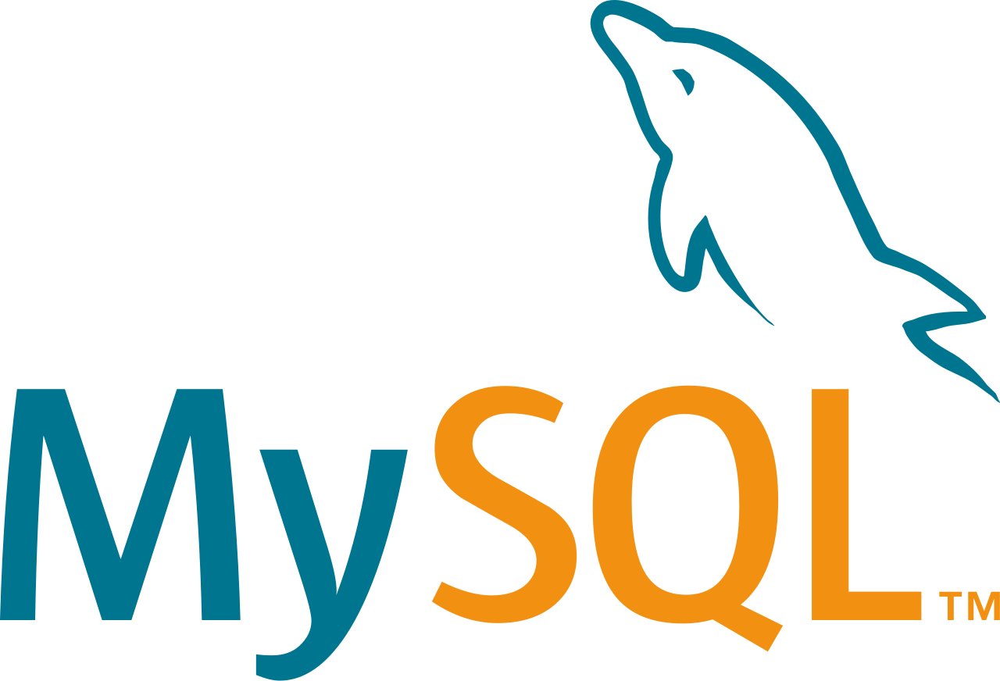

Alur Belajar
-
Pilih Bahasa Pemrograman
Developer perlu memahami bahasa pemrograman untuk mengelola server dan logika aplikasi. Ada banyak jenis bahasa pemrograman, namun tidak semuanya digunakan dalam back end development. Bahasa pemrograman back end developer yang umum digunakan adalah Python, Go, Node JS dan PHP.


-
Pilih Database
Database adalah komponen inti dalam pengembangan back-end yang memungkinkan penyimpanan, pengelolaan, dan pengambilan data secara efisien. Jenis-jenis database yang umum digunakan diantaranya MySQL, PostgreSQL, dan MongoDB.

-
Konsep API
API adalah penghubung antar service. Biasanya menghubungkan frontend dan backend. Kalau diibaratkan seperti restoran, API adalah waiters yang menghubungkan pelanggan (client/frontend) dengan koki di dapur (server/backend). Bentuk API adalah sebuah URL yang bisa diakses melalui browser atau client lainnya.

-
Pilih Framework Backend
Framework backend adalah sebuah kerangka kerja bagian server untuk memudahkan segala tugas pekerjaan dari Back-End Developer. Framework ini lebih fokus pada bahasa pemrograman seperti Express Js, PHP Laravel, Python Django, dan Golang Fiber.